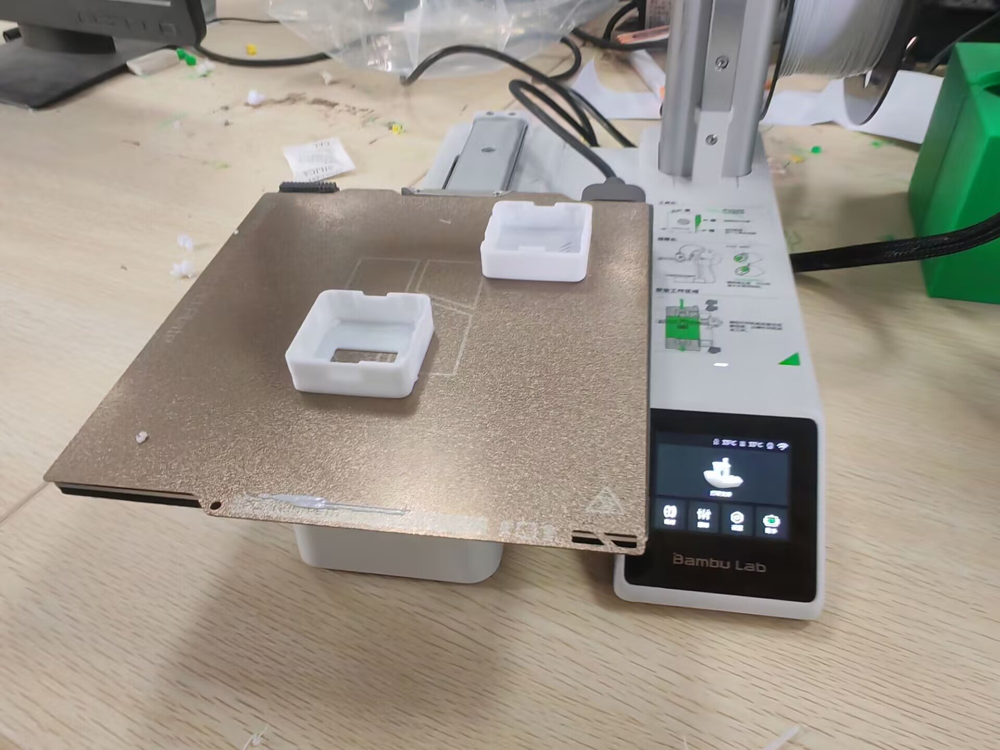
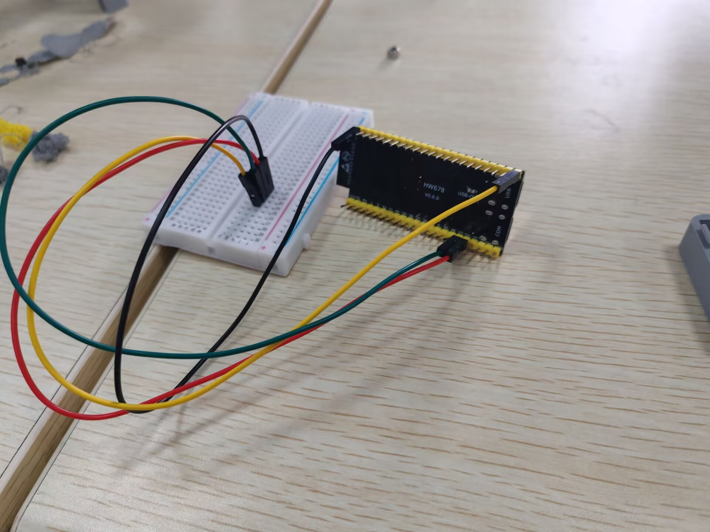
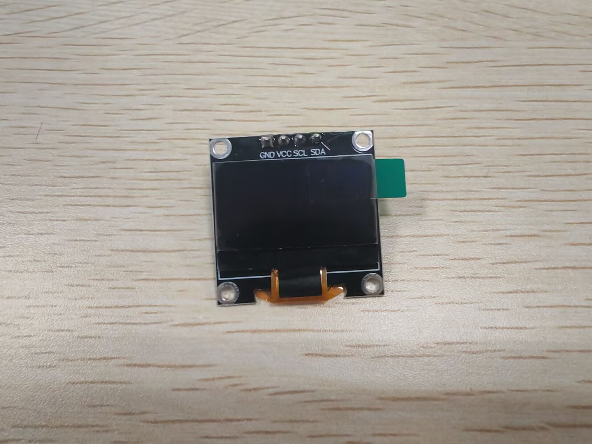
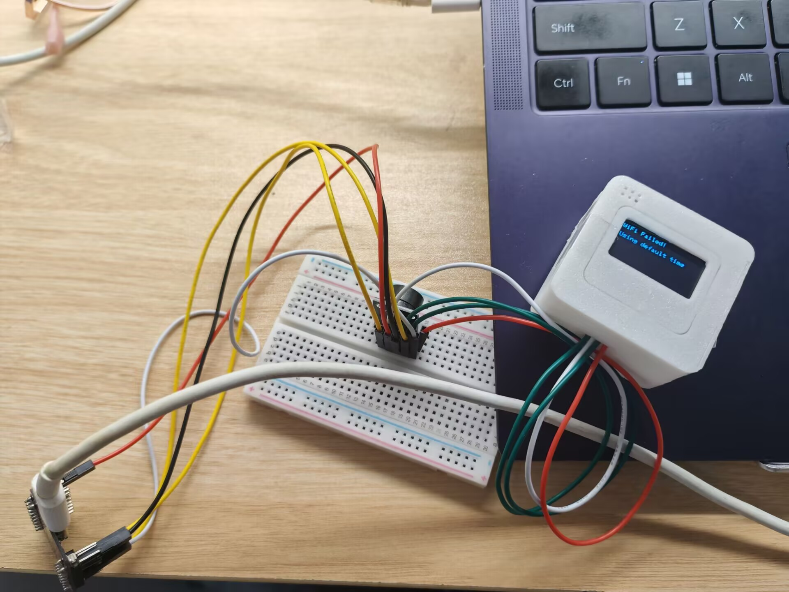
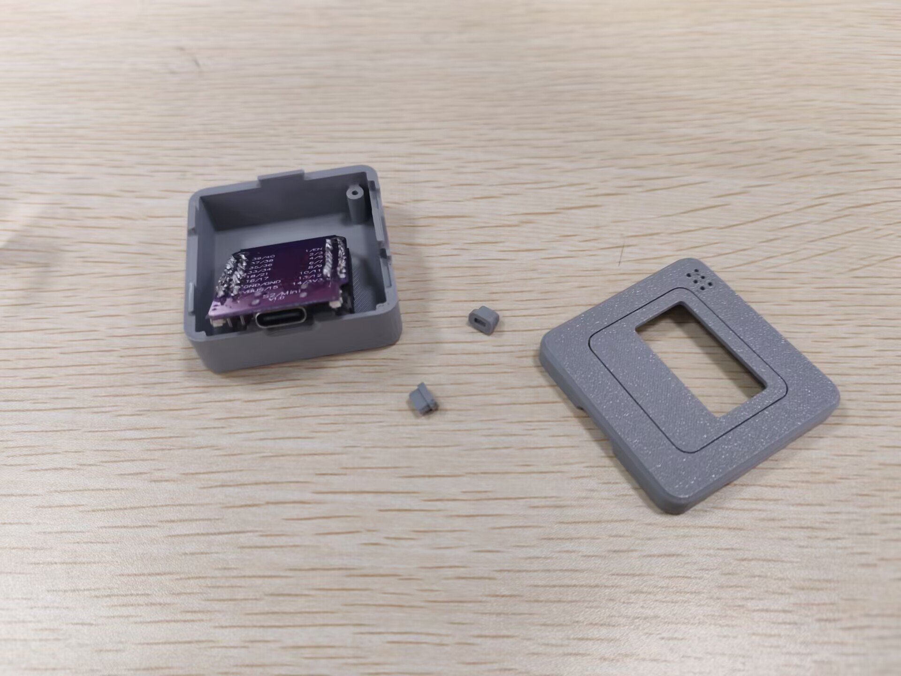
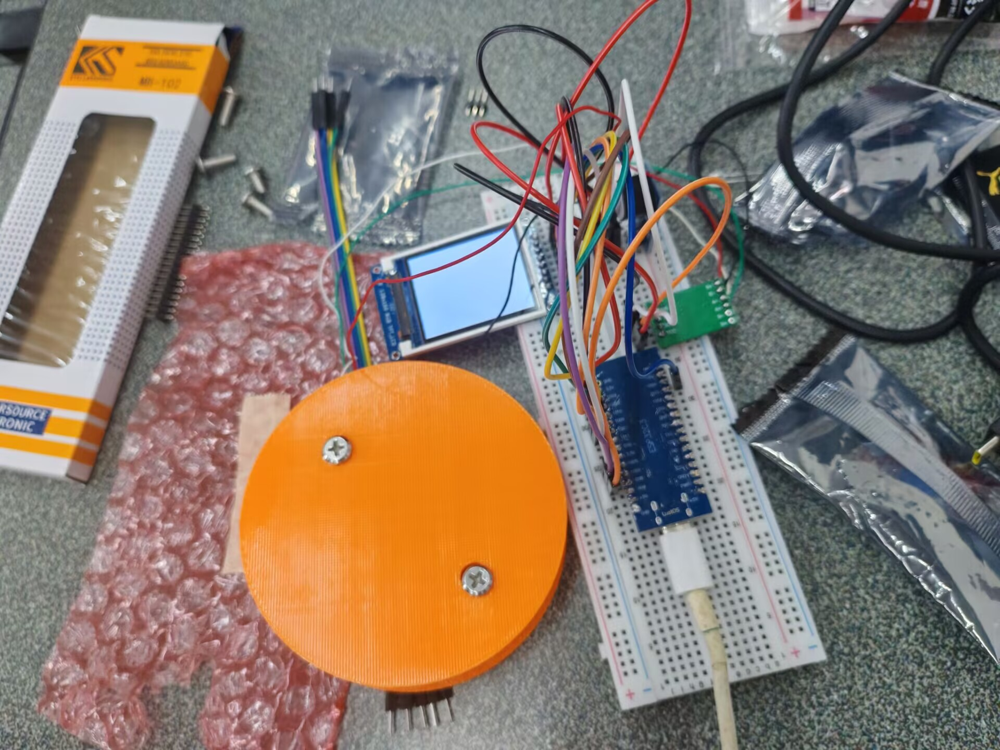
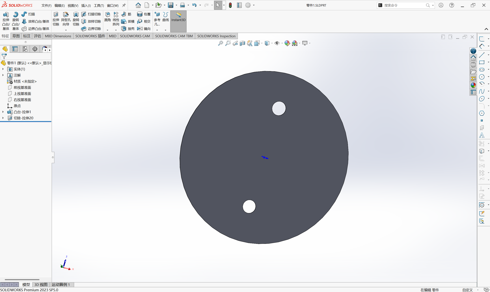
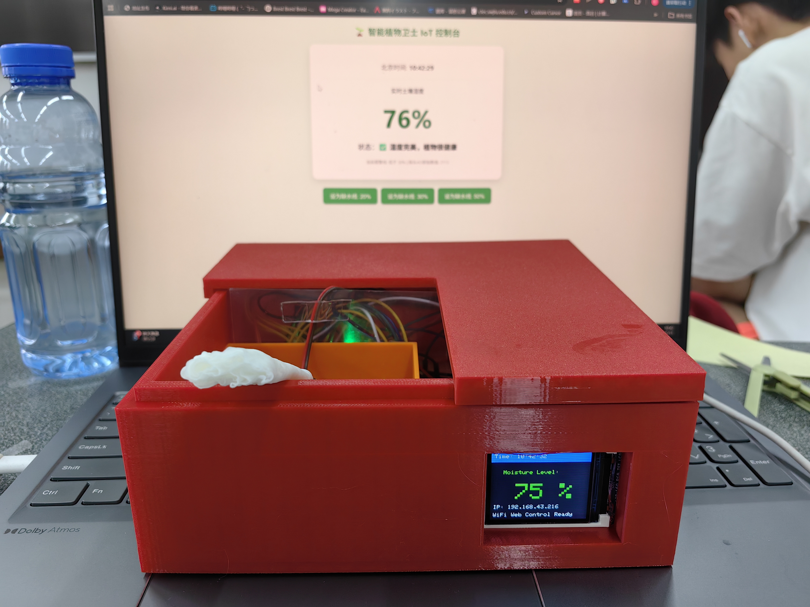
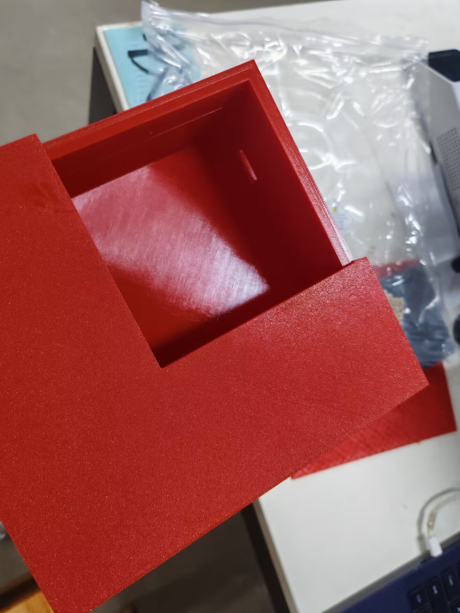

项目成果展示
本页展示了我在"从代码到实物：造你所想"课程中完成的两个主要项目：中期项目"智能音乐时钟"和期末项目"智能定时喝水控制系统"。
中期项目：智能音乐时钟
项目简介
项目名称：智能音乐时钟
团队成员：李瑛琪、唐宇涵
分工详情
- 李瑛琪：3D打印外壳设计、外壳组装与装配
- 唐宇涵：代码编写、硬件接线、电路测试
项目成果
打印成功率：100%
关键成就：完成3套SolidWorks方案、优化打印参数、问题解决
硬件元器件清单
- 主控板：ESP32 DevKitC — 1 个
- 显示屏：0.96寸OLED显示屏 — 1 个
- 音频：蜂鸣器 — 1 套
- 互联与固定：排针、杜邦线、螺丝、螺柱 — 若干
- 调试用：面包板 — 1个
- 被动元件：电阻、电容等 — 备件若干
设计文件
设计与制造过程照片（7张）





演示视频（5段）
演示视频 1
演示视频 2
演示视频 3
演示视频 4
项目感受与收获
- 项目感受：从设计到实体验证的闭环让我收获很大，尤其是将创意用可触达的成品呈现出来的满足感。
- 遇到的困难：打印配合尺寸误差、材料强度不足、与硬件接口调试的兼容问题。
- 失败记录：本项目中共损坏两块显示屏。第一块在调试时掰引脚造成引脚断裂，无法修复；第二块因误用502胶粘接导致线路短路并使屏体永久损坏。已将教训记录在案，并调整调试流程以避免重复发生。
- 如何解决：通过增加配合公差、分批调整打印参数并记录参数表；更换更合适的材料并做拉伸测试；在电路调试中采用模块化验证（逐步接入外设）并记录日志，最后通过团队协作快速定位并修复问题。
期末项目：智能植物卫士
项目简介
项目名称：智能植物卫士
产品定义：一款可通过手机Web端远程监控并按需浇水报警的室内智能植物看护终端。
应用场景：室内植物养护与湿度监测
硬件清单：ESP32-C3板 + 阻性土壤传感器 + 有源蜂鸣器 + 面包板 + TFT显示屏
项目成果
数据精度：±2%
稳定性测试：2天连续运行
团队成员与分工
- 组长 — 黄新雄：主代码编写、串口调试、系统集成、文档编写
- 硬件负责人 — 李瑛琪：杜邦线接线、电路调试、焊接、分压电路
- 固件开发 — 唐宇涵：Fusion 360 外壳设计、Bambu Lab 打印、组装
- 组装/调试 — 李露：外壳组装、走线理线、现场演示
- 结构与测试 — 刘知行：功能测试、演示准备、物料协调、拍照记录
系统架构
硬件层：ESP32 MCU + DHT22温湿度传感器 + LDR光线传感器 + 土壤湿度传感器 + 自主设计PCB
软件层：PlatformIO开发 + 多线程采样 + WiFi/MQTT通信 + 数据处理
数据处理：数据处理模块 + 串口调试 + 串口数据可视化
结构设计：SolidWorks 3D建模 + 3D打印防护罩 + 模块化安装
项目时间轴 (Design Log)
周六 10:00・项目启动 & 硬件清点
团队成员集合，领取 ESP32-C3 主控板、土壤湿度传感器、ST7735 彩屏、蜂鸣器等硬件物料。结合使用场景，确定开发智能土壤湿度监测系统，实现湿度采集、声光报警、屏幕显示、网页远程控制核心功能，用于绿植缺水提醒。
周六 10:30・分工确认 & 方案细化
明确各组员工作内容，划分软件开发、硬件接线、3D 打印、功能测试、整机组装五大板块。确定整体运行逻辑：传感器采集土壤湿度 → 主控处理数据 → 屏幕实时刷新状态 → 低于阈值触发蜂鸣报警 → 网页远程查看数据、修改报警阈值、关闭报警。
周六 11:20・踩坑 1：传感器读数固定不变
完成接线后，土壤湿度传感器数值始终保持固定值，触碰、沾水后数据均无变化。
排查过程：核对接线无误；更换供电引脚问题依旧；排查发现探头内部断路，换新后数据正常变化。
踩坑原因：传感器硬件损坏，模拟信号无法正常输出。
周六 13:10・踩坑 2：TFT 彩屏黑屏无法启动
彩屏接线完成后，上电全程黑屏，无任何文字与画面显示。
排查过程：逐一核对 SPI 引脚无误；更换官方配套库文件问题未解决；判定硬件 SPI 存在冲突，改用软件 SPI 点亮。
踩坑原因：ESP32-C3 硬件 SPI 引脚与彩屏模块不兼容，导致初始化失败。
周六 14:50・踩坑 3：湿度数据波动跳变
传感器置于同一土壤环境，采集的 AD 数值频繁跳动，湿度百分比不稳定，频繁误报警。
解决方法：在传感器模拟输出引脚增加滤波电容；代码中加入多次采样平均值滤波算法；增设软件防抖逻辑。
踩坑原因：线路干扰 + 模拟信号不稳定，造成采集数据误差较大。
周六 16:40・踩坑 4：无法访问网页端
ESP32 正常连接 WiFi，同局域网下手机无法打开控制网页。
排查过程：确认同一 WiFi 且重连无效；检查路由器发现开启 AP 隔离功能。
解决方法：关闭路由器 AP 隔离，或使用手机热点进行测试。
周六 18:20・功能联调 & 逻辑优化
完成所有硬件与软件联调，优化逻辑：校准干湿土壤对应的 AD 数值；优化间断鸣响报警节奏；完善网页界面与数据展示；优化屏幕显示布局。
周六 21:10・项目收尾 & 文档整理
对整机进行长时间稳定性测试，所有功能运行正常。整理开发过程资料、接线图、问题排查记录，完成全套项目文档。
周日 上午・外壳组装 & 项目彻底完成
进行最终的外壳组装工作，将所有硬件模块与线路固定于3D打印外壳中，项目彻底完成。
设计与制作过程照片（7张）







演示视频（2段）
演示视频 1
演示视频 2
核心嵌入式代码
void loop() {
server.handleClient();
updateLocalTime();
// 读取传感器模拟量并映射到 0~100%
rawAnalogValue = analogRead(SOIL_PIN);
currentMoisture = map(rawAnalogValue, dryValue, wetValue, 0, 100);
currentMoisture = constrain(currentMoisture, 0, 100);
// 当浇水湿度恢复后，自动重置网页端的静音标记
if (currentMoisture >= alarmThreshold) {
isMuted = false;
}
// 报警判定：低于阈值且未被手动静音则触发蜂鸣器
bool shouldAlarm = (currentMoisture < alarmThreshold) && !isMuted;
if (shouldAlarm) {
digitalWrite(BEEP_PIN, BEEP_ON);
} else {
digitalWrite(BEEP_PIN, BEEP_OFF);
}
// 刷新屏幕显示...
}查看完整开源代码：📦 final.cpp
性能指标
±2%
温度精度
2天+
连续运行
100ms
采样周期
MQTT
通信协议
遇到的硬核Bug及解决方案 (Reflections)
- Bug 1：由于代码与硬件不匹配导致的灾难性冲突 最初开发时错误调用了SSD1306库（黑白屏），而实际硬件使用的是SPI接口的1.8寸彩色TFT屏；不仅如此，蜂鸣器为低电平触发，早期代码设置为HIGH报警，导致一开机就不停狂响。
- 如何解决： 将显示库替换为 `Adafruit_ST7735` 并重新配置SPI针脚；测试蜂鸣器触发逻辑并将其改为 `LOW` 触发。
- Bug 2：无法获取互联网NTP时间死锁 最初利用手机开软路由和ESP32的`WiFi.softAP`热点自建局域网，导致单片机没有真实的互联网连接，一直获取不到北京时间。
- 如何妥协与解决： 妥协并放弃最初单纯建立AP的点对点想法。重构了网络代码，让设备处于 `STA模式` 下连接真实的手机热点，通过真实网络成功同步了阿里云NTP时间，并保证了前后端的正常交互。
两个项目的对比与收获
| 维度 | 中期项目 | 期末项目 |
|---|---|---|
| 核心技能 | 3D建模、打印工艺 | 嵌入式、传感器、云端 |
| 复杂度 | 中等 | 高 |
| 成功指标 | 95%打印率 | ±2%精度、2天稳定 |
| 团队规模 | 2人 | 5人 |